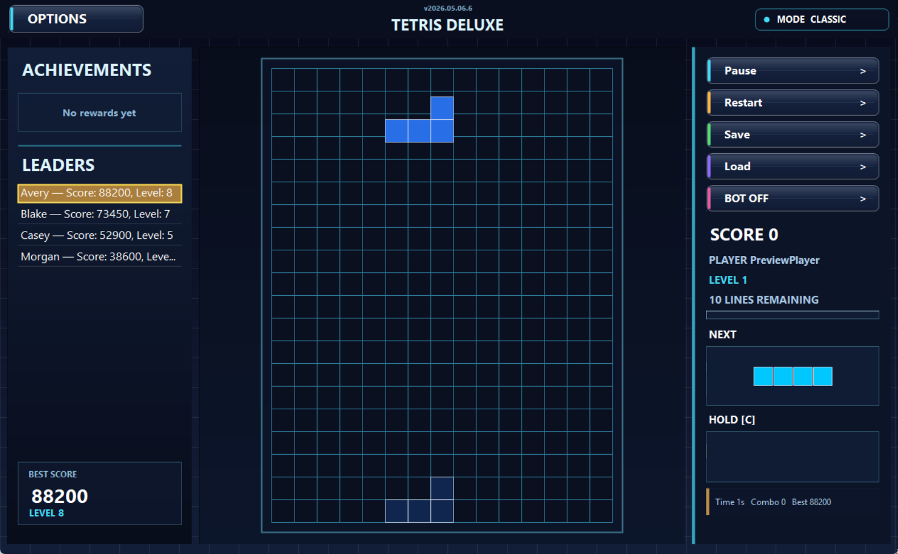
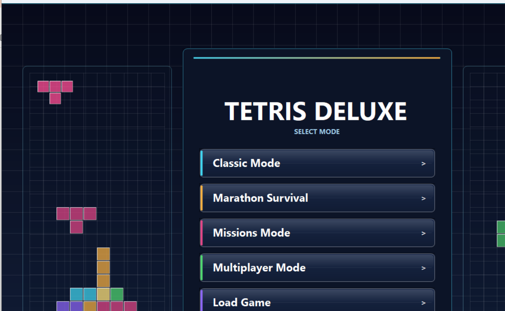
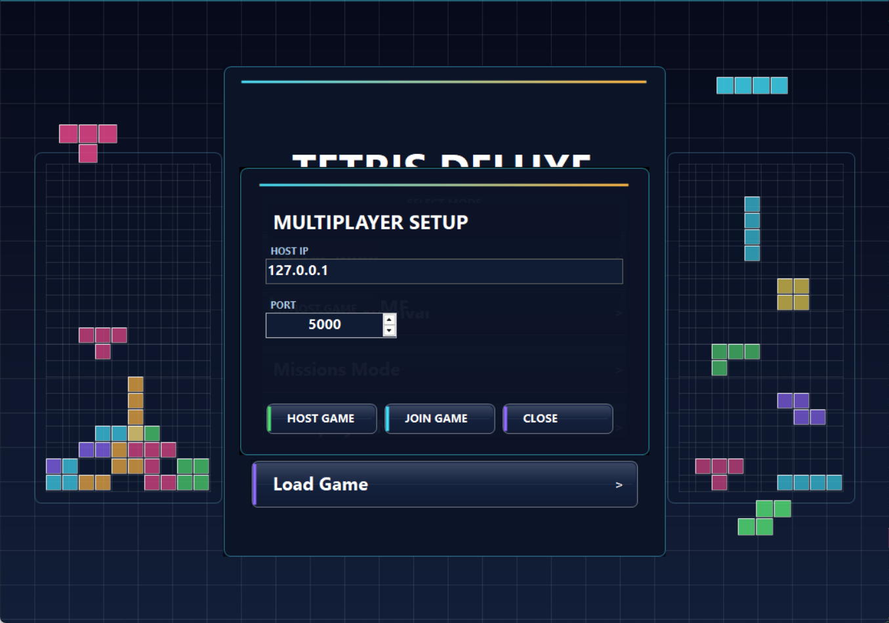

Expert bot with 2-piece lookahead, improved missions, UI fixes, and layout polish.
v0.2.0 · Free · Windows
Tetris Deluxe
Missions, bombs, WiFi multiplayer, expert bot AI, and save/load — a fresh take on the classic block game.

From quick score runs to timed objectives and live WiFi play against a friend.
Full source code on GitHub. No installer required — just unzip and run.
What's inside
More than a Tetris clone
Built on top of classic Tetris rules with extra mechanics that change how the game plays and feels.
Timed objectives with a live HUD — clear lines, reach a score, use Hold, or level up before the timer runs out.
Bombs, slow-down, double points, and extra score spawn on the board as collectible objects during play.
Three difficulty levels. Expert uses 2-piece lookahead with pruning — plays fast without freezing.
Host or join a game over local WiFi. Clear lines to send garbage rows; collect bombs to hit your opponent.
Full game state saved: board, score, level, pieces, and mission progress. Resume exactly where you stopped.
Screenshots
Gallery





← → arrow keys · swipe on mobile
Setup
Up and running in seconds
1
Download
Get the latest release ZIP from GitHub using the button below.
2
Extract
Unzip the archive to any folder. No installer, no admin rights needed.
3
Play
Run TetrisGame.exe and pick a mode from the menu.
Community
Comments and feedback
Write what feels weak, what is confusing, what broke, or what should come next. General comments go to Discussions; concrete bugs go to Issues.